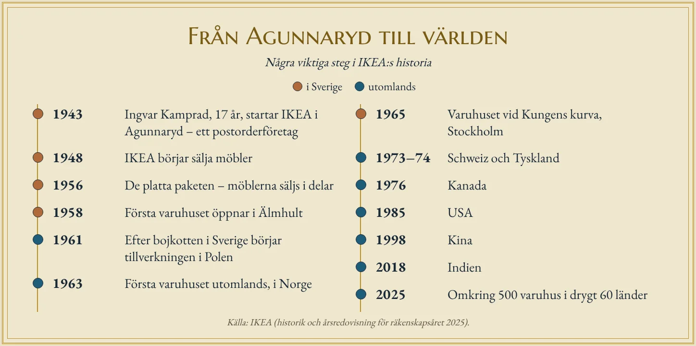

En pojke som sålde tändstickor
På gården Elmtaryd utanför Agunnaryd i södra Småland växer det mer sten än säd. Här bor familjen Kamprad, och här växer sonen Ingvar upp under 1930-talet. Redan som liten pojke börjar han göra affärer. Han köper tändstickor billigt i stora förpackningar och säljer dem styckvis till grannarna, med en liten vinst på varje ask. Senare säljer han fröer, julkort, pennor och fisk som han fiskat själv.
Sommaren 1943 är Ingvar sjutton år gammal. Han har klarat skolan bra, och hans pappa ger honom en summa pengar som belöning. Ingvar använder pengarna till att registrera ett eget företag. Han kallar det IKEA. Namnet är egentligen en adress: Ingvar Kamprad från Elmtaryd i Agunnaryd.
Det är svårt att tänka sig en mer avlägsen plats att starta ett världsföretag på. Agunnaryd är en liten socken mitt i skogen. Det finns ingen stad, inga stora vägar och inga kunder i närheten. Men just därför blev IKEA som det blev.
Mjölkbilen och postordern
Det första IKEA sålde var inte möbler. Det var små saker som folk behövde: pennor, plånböcker, tavelramar, klockor och nylonstrumpor. Eftersom det inte fanns några kunder i Agunnaryd fick kunderna komma till IKEA på ett annat sätt – med posten. IKEA blev ett postorderföretag. Kunderna läste annonser i tidningar, skickade en beställning och fick varorna hemskickade.
Ingvar kunde inte köra ut varorna själv. I stället använde han mjölkbilen, som ändå körde runt till gårdarna varje dag för att hämta mjölk. Den tog med sig IKEA:s paket till järnvägsstationen, och därifrån gick de vidare med tåg ut i landet. Det är ett tidigt exempel på något som skulle bli typiskt för IKEA: att hitta det billigaste sättet att flytta en vara från ett ställe till ett annat.
År 1948 började IKEA sälja möbler. Det var ett naturligt steg. I Småland fanns gott om skog och många små snickerier som tillverkade möbler. Snart blev möblerna den viktigaste delen av företaget, och i början av 1950-talet kom den första IKEA-katalogen. Den skickades hem till människor i hela Sverige. Katalogen fanns kvar i nästan sjuttio år, och det brukar sägas att den under en tid var en av världens mest spridda trycksaker. Den sista tryckta katalogen kom 2020.
Benen som inte fick plats
Möbler har ett problem: de är stora och klumpiga. De tar mycket plats i lastbilar och på tåg, och de går lätt sönder på vägen. Det kostar pengar, och de pengarna hamnar till slut i priset som kunden betalar.
Lösningen kom, enligt IKEA:s egen berättelse, en dag 1956. En av företagets första anställda, Gillis Lundgren, skulle ta ett bord till en fotografering för katalogen. Bordet fick inte plats i bilen. Då skruvade han av benen.
Det låter enkelt, men idén förändrade hela möbelbranschen. Om möblerna säljs i delar kan de packas i platta paket. Ett platt paket tar mycket mindre plats än en färdig möbel. Det betyder att fler möbler får plats i varje lastbil, att färre går sönder och att lagret kan vara mindre. Och om kunden själv skruvar ihop möbeln hemma behöver IKEA inte betala någon för att göra det. Varje sådan besparing gör möbeln billigare. Samma Gillis Lundgren ritade senare bokhyllan Billy, som kom 1979. Den är byggd för att packas platt, går att skruva ihop med enkla verktyg och har sålts i tiotals miljoner exemplar över hela världen.
Platta paket är ett tydligt exempel på hur transportkostnader påverkar ekonomin. Ett företag som kan flytta sina varor billigt kan sälja dem billigt, även om fabriken ligger långt bort.
Bojkotten
IKEA:s låga priser gjorde de etablerade möbelhandlarna i Sverige oroliga. De hade fått konkurrens av ett litet företag i Småland som sålde billigare än de själva. Under 1950-talet försökte de därför stoppa IKEA. Handlarna pressade de svenska möbelfabrikerna att sluta sälja till IKEA, och IKEA stängdes ute från en möbelmässa i Stockholm. Det kallas för en bojkott.
Det kunde ha blivit slutet för företaget. I stället blev det en ny början. När IKEA inte kunde köpa möbler i Sverige började man leta i andra länder. År 1961 började IKEA tillverka möbler i Polen. Arbetskraften där var billig, och det fanns gott om skog och kunniga snickare.
Det var första gången IKEA flyttade en del av produktionen utomlands, men det skulle inte bli den sista. I dag tillverkas IKEA:s varor av omkring 1 600 leverantörer i över 50 länder. De största tillverkningsländerna är Kina och Polen. Det är samma mönster som du har sett i mobiltelefonens och t-shirtens resa: varorna tillverkas där det är billigast, och säljs där kunderna finns.
Ett varuhus i skogen
År 1958 öppnade IKEA sitt första varuhus i Älmhult, några mil från Agunnaryd. Det var stort för sin tid – den största möbelutställningen i Skandinavien. Folk reste långa vägar för att se och känna på möblerna innan de köpte dem. År 1960 fick varuhuset en restaurang. Tanken var enkel: hungriga kunder går hem, men mätta kunder stannar och handlar mer.
Varför i Älmhult? En viktig orsak var järnvägen. Älmhult ligger vid södra stambanan, som går mellan Stockholm och Malmö. För ett postorderföretag som skickade paket över hela landet var det en stor fördel. Älmhult låg också nära de småländska möbelsnickerierna och nära Ingvar Kamprads hem.
Älmhult är fortfarande viktigt för IKEA. Där utvecklas och designas en stor del av sortimentet, och i det gamla varuhuset finns i dag IKEA-museet. En liten ort i Småland är på så sätt en av de viktigaste platserna för ett av världens största företag.
Ut i världen
Från Älmhult växte IKEA steg för steg. År 1963 öppnade det första varuhuset utomlands, i Norge. Två år senare kom ett stort varuhus vid Kungens kurva söder om Stockholm, byggt för att kunderna skulle komma med bil. Här började kunderna också hämta de platta paketen själva på lagret. Enligt IKEA:s egen berättelse kom så många människor när varuhuset öppnade att personalen inte hann med, och då släppte man in kunderna på lagret. Det som i andra butiker gjordes av personal fick kunden nu göra själv – och det höll nere priserna. Det är ett exempel på hur bilen förändrade handeln: varuhusen kunde ligga utanför städerna, där marken var billigare och det fanns plats för stora parkeringar.
På 1970-talet tog sig IKEA ut i Europa, först till Schweiz och sedan till Tyskland, som i dag är företagets största marknad. Sedan följde Kanada 1976, USA 1985, Kina 1998 och Indien 2018.
I dag finns det omkring 500 IKEA-varuhus i drygt 60 länder. Under räkenskapsåret 2025 sålde IKEA varor för 44,6 miljarder euro, omkring 500 miljarder kronor. Varuhusen fick över 900 miljoner besök. Företaget har omkring 220 000 anställda.

Ett svenskt företag?
Är IKEA fortfarande ett svenskt företag? Både ja och nej. Varuhusen har gula och blå färger, restaurangerna serverar köttbullar och produkterna har svenska namn. Men företaget ägs i dag genom stiftelser och bolag med säte i Nederländerna. Ingvar Kamprad själv flyttade från Sverige 1973, bland annat för att slippa den höga svenska skatten, och bodde i Schweiz i många år innan han flyttade tillbaka till Småland på äldre dagar. Han dog 2018.
Det är typiskt för ett globalt företag. Idéerna och designen kommer från ett land, varorna tillverkas i ett annat, ägarna finns i ett tredje och kunderna i nästan hela världen. Det svenska är till stor del ett varumärke, en känsla som säljer.
Från socken till världen
IKEA:s historia brukar berättas som en saga om en smart pojke från Småland. Men för en geograf är det också en berättelse om platser. En fattig och avlägsen bygd tvingade fram ett företag som var tvunget att tänka på transporter, priser och kostnader från första början. Mjölkbilen, postordern och de platta paketen var alla lösningar på samma problem: att kunderna fanns långt borta.
I dag är problemet omvänt. IKEA finns överallt, men det mesta tillverkas långt från de människor som köper det. En bokhylla som står i ett vardagsrum i Stockholm kan ha börjat som ett träd i Polen, blivit hyllplan i en fabrik i Litauen och designats i Älmhult. Den har rest långt för att hamna där. Och den resan började med en pojke som sålde tändstickor till grannarna.
Djupdykning till avsnitt 1 (Näringslivet), text D. Fördjupningsnivå.